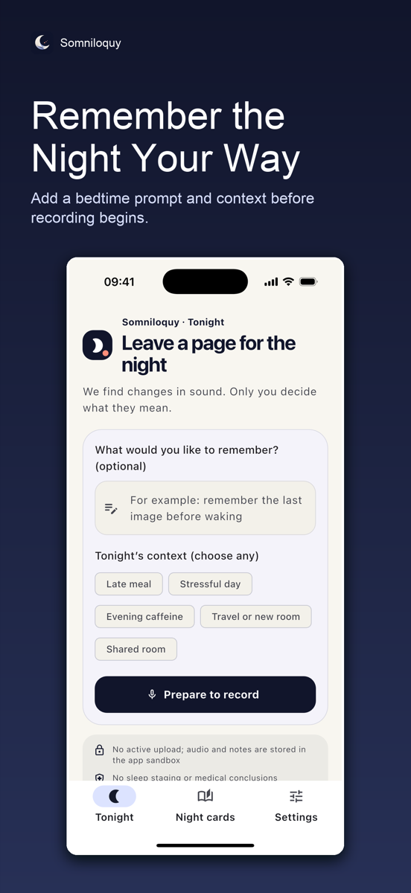

Find candidate moments
Record for up to 12 hours with a clear on-screen indicator. Somniloquy marks relative changes in volume without claiming to identify a person, condition, or sleep stage.
Local night recording · Human reviewed
Somniloquy marks changes in sound so you can listen, label what you hear, and add a morning memory. It does not assign a sleep score or make medical conclusions.
Contact support
A private review loop
Record for up to 12 hours with a clear on-screen indicator. Somniloquy marks relative changes in volume without claiming to identify a person, condition, or sleep stage.
Replay the full local recording or listen around each candidate moment. Add your own label and morning note before a night card becomes part of your archive.
No account, ads, or analytics SDK. App content is stored in the app sandbox and is not actively uploaded. You can permanently delete one night or all app-managed data.
Important boundary
Somniloquy does not detect sleep stages, apnea, disease, snoring disorders, or sleep quality. Contact a qualified health professional about health concerns.